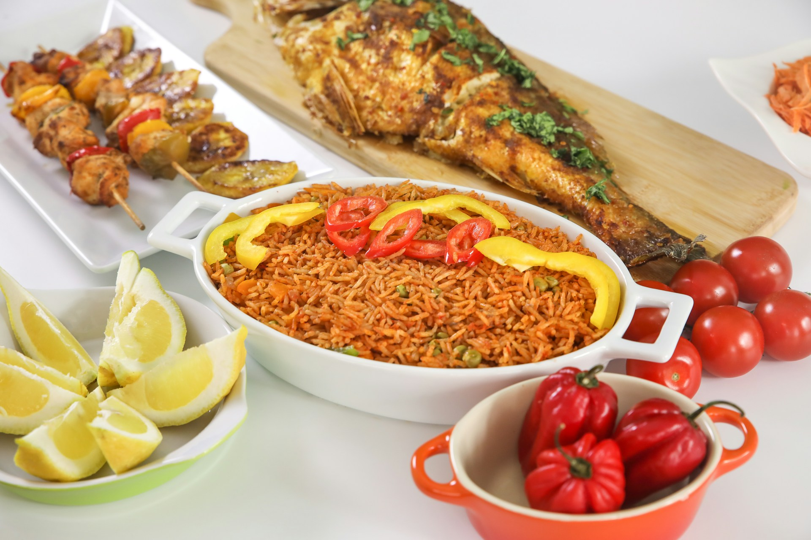

B.a.o.K's Jollof Rice

Description
Jollof rice is a popular one-pot rice dish in West Africa, known for its vibrant color and rich, savory flavor.
It typically consists of rice cooked in a flavorful tomato-based sauce with spices, onions, and peppers.
Ghana is known to have the best jollof
Ingredients
Tomato Sauce
- 1 large , ripe tomato, cored and quartered
- 1 large red bell pepper, seeded and roughly chopped
- 1 whole habanero pepper, stem removed
- 1 whole Fresno chili, or jalapeño, stem removed
- 4 cloves garlic, peeled
- 1 tablespoon minced ginger
- 2 cups water
Rice
- 1/3 cup olive oil
- 1 red onion, diced
- 1 teaspoon salt, plus more to taste
- 1/4 cup tomato paste
- 2 tablespoons smoked paprika
- 1 teaspoon curry powder
- 1 teaspoon cumin
- 1 teaspoon dried thyme
- 1/2 teaspoon freshly ground black pepper
- 1/4 teaspoon turmeric
- 2 1/4 cups basmati rice
- 1 bay leaf
- 1 tablespoon chicken bouillon paste
- 1/4 cup chopped green onionfor garnish (optional)
- 1/4 cup chopped cilantro, for garnish (optional)
Home